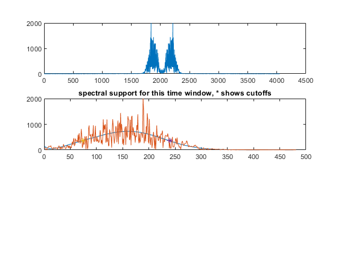
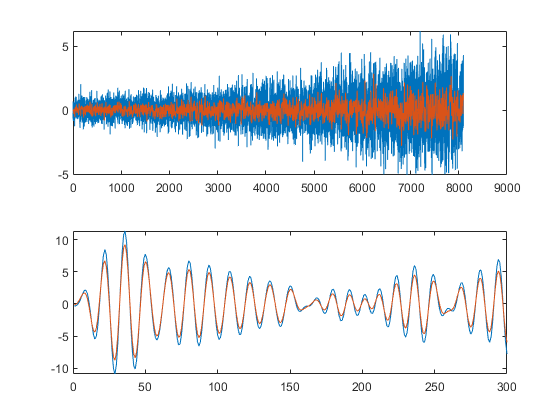

Contents
% this gets noise_power: .3096, sig power: .1656, total: .4752
Prob2 assign 3
Tom Manuel Load in the data
close all clear all load('Assignment3_problem2.mat') sig = nonStaData.signal; noi = nonStaData.noise; f0 = nonStaData.f0; fs = nonStaData.fs; RF = nonStaData.sigAndNoise;
Inspect and filter sig
get center of spectrum for each window
Nz = length(sig); wsp=8; WS = wsp*506; %window size front=1; back=WS; nWin = ceil(Nz/WS); close all figure cFs = zeros([nWin 1]); % capture center of spectral support for window lFs = cFs; % lower bound of filter hFs = cFs; % upper bound of filter % create arrays to store recombined filtered signals filtSig = zeros([Nz 1]); filtNoise = filtSig; filtRF = filtSig; depthFactor = linspace(3,2,nWin); for i=1:nWin if back>Nz back=Nz; end chunk = sig(front:back); chunk2 = noi(front:back); chunk3 = RF(front:back); Fchunk = fftshift(abs(fft(chunk))); Fchunk2 = fftshift(abs(fft(chunk2))); Fchunk3 = fftshift(abs(fft(chunk3))); % polyfit to spectral support to estimate center and bandwidth foo1 = Fchunk; endInd = WS/2 + wsp*60; x=1:length(foo1(WS/2:endInd)); f = polyfit(x',foo1(WS/2:endInd),10); ff = polyval(f,x); %ff is a poly fit to spectral support [val, ind]=max(ff); cFs(i)=abs(ind/2)/(WS/2); % get max in terms of filter parameters % use ff to find bandwidth parameters %crit = 3; %2 would search FWHM crit = depthFactor(i); lpar = 1; %bias low cutoff to be further from center hpar = 1; % get lower bound [~,indL] = min(abs(ff(1:ind)-val/(lpar*crit))); lFs(i) = (indL/2)/(WS/2); %lFs(i) = 0.001; % get upper bound [~,indH] = min(abs(ff(ind:end)-val/(hpar*crit))); indH = indH + ind; indH2 = indH; if indH2>length(ff) indH2=length(ff); %just for plotting purposes end hFs(i) = ((indH)/2)/(WS/2); %hFs(i) = .5; % visualize the moving spectral support along with the filter % parameters for each time window subplot(311) plot(Fchunk) subplot(312) hold off plot(x,ff,x,foo1(WS/2:endInd)) hold on plot(indL,ff(indL),'*') plot(indH,ff(indH),'*') % plot(Fchunk2) % subplot(313) % plot(Fchunk3) title('spectral support for this time window, * shows cutoffs') pause(.11) % apply filter to window b = fir1(10,[lFs(i) hFs(i)]); filtSig(front:back) = filter(b,1,chunk); %sig filtNoise(front:back) = filter(b,1,chunk2); %noise filtRF(front:back) = filter(b,1,chunk3); %RF front=back+1; back=back+WS; end
Warning: Polynomial is badly conditioned. Add points with distinct X values, reduce the degree of the polynomial, or try centering and scaling as described in HELP POLYFIT. Warning: Polynomial is badly conditioned. Add points with distinct X values, reduce the degree of the polynomial, or try centering and scaling as described in HELP POLYFIT.
account for phase shift from filter
shiftSamp = -5; t=1:Nz; filtSig = interp1(t+shiftSamp,filtSig,t); filtSig(isnan(filtSig))=0; % account for damping from filter % have to also do this to noise to be fair dampFact= 1.1; filtSig = filtSig.*dampFact; filtNoise = filtNoise.*dampFact; % % ouput results noise_power = mean(filtNoise.^2) signal_error_power = mean((filtSig' -sig).^2) total = noise_power + signal_error_power % figure subplot(211) plot(noi) hold on plot(filtNoise) subplot(212) plot(sig(1:300)) hold on plot(filtSig(1:300))
noise_power =
0.3096
signal_error_power =
0.1656
total =
0.4752
